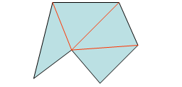
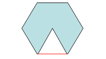
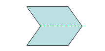

Unlike a regular polygon, unless you know the coordinates of the vertices, there is no easy formula for the area of an irregular polygon. Each side could be a different length, and each interior angle could be different. It could also be either convex or concave.
If you know the coordinates of the vertices of the polygon, there are two methods:
One approach is to break the shape up into pieces that you can solve - usually triangles, since there are many ways to calculate the area of triangles. Exactly how you do it depends on what you are given to start. Since this is highly variable there is no easy rule for how to do it. The examples below give you some basic approaches to try.

In the figure above, the polygon can be broken up into triangles by drawing all the diagonals from one of the vertices. If you know enough sides and angles to find the area of each, then you can simply add them up to find the total. Do not be afraid to draw extra lines anywhere if they will help find shapes you can solve.
In the figure above, the overall shape is a regular hexagon, but there is a triangular piece missing.
In the figure above, the shape is an irregular hexagon, but it has a symmetry that lets us break it into two parallelograms by drawing the red dotted line. (assuming of course that the lines that look parallel really are!)As you can see, there an infinite number of ways to break down the shape into pieces that are easier to manage. You then add or subtract the areas of the pieces. Exactly how you do it comes down to personal preference and what you are given to start.